| Author: | Jesús Arias Fisteus |
|---|
Contents
This is the user manual for Eyegrade 0.8. Versions of this manual for earlier versions are available: 0.7, 0.6, 0.5, 0.4, 0.2.
We propose several ways to get Eyegrade running, so that you can choose the one that better fits your needs and experience in Linux systems:
Both are described below. The first alternative is somewhat easier, since it doesn't require you to install any other software, but has the disadvantages that Eyegrade may take longer to startup or, on rare occasions, might fail to start on your Linux system. The second alternative, pipx, requires your system to have Python 3.6 or 3.7 installed. The installation procedure is a little bit more complex, but in our opinion it's totally worth it if you already have Python 3.6 or 3.7.
Eyegrade for Linux is distributed as a tarball file containing the executable files eyegrade (its main program) and eyegrade-create (the command line tool that creates the PDF files of the exam). Download and uncompress the tarball file from the downloads page and save the binary files in the location you prefer inside your account or within a system-wide directory. You may want to add the directory to your PATH or place the binaries inside a directory that is already in your PATH. For example, if you want to place the binaries inside /usr/local/bin, which is usually in your PATH:
tar xavf eyegrade-0.8-linux-bin.tgz sudo cp eyegrade-0.8-linux-bin/eyegrade /usr/local/bin sudo cp eyegrade-0.8-linux-bin/eyegrade-create /usr/local/bin
Check that your Linux system has Python 3.6 or 3.7 installed by running:
python3 --version
Several things may happen:
Once you have a working version of Python 3.6 or Python 3.7, install pipx through pip:
python3 -m pip install --user pipx
If you get a message saying that there is no module named pip, install the python3-pip package and then run:
pip install --user pipx
The pipx command might now be available on your shell's PATH. Try to run:
pipx install eyegrade
If pipx isn't found as a command, you need to add $HOME/.local/bin to your PATH. The pipx program is able to do that if you run:
$HOME/.local/bin/pipx ensurepath
Now, try to install Eyegrade again, and it should work:
pipx install eyegrade
That's it! You can now run Eyegrade by entering the eyegrade command in a terminal:
eyegrade
The eyegrade-create program will also available as a command-line program:
eyegrade-create --version
Download and install Microsoft's Visual C++ Redistributable for Visual Studio 2015.
Then, download Eyegrade's Windows installer from the downloads page and run it. Once installed, Eyegrade will be accessible through your Start Menu.
Important: The security systems of Windows will probably alert you that running the installer may be dangerous because of it coming from an untrusted source. The reason is that being Eyegrade free software I cannot pay for a trusted certificate with which to sign the installer. If you want to be sure the installer has not been tampered with by anybody, use the checksums from the downloads page.
Note: If you try to uninstall Eyegrade manually or run the installer for a newer version, the installer may fail with a message saying that Eyegrade is running and should be closed first. This message will appear also if there is any file manager window positioned in a directory called Eyegrade. Close the file manager window in that case and proceed again.
Unfortunately, I cannot provide support for Mac OS X. I'm confident that Eyegrade should work on that platform out of the box or with some minimal changes, but I don't own a computer in which to check and build an installer. Volunteers to support Eyegrade on Mac OS X are welcome.
In Linux systems, just replace the binaries of Eyegrade 0.7 with the new ones. In Windows, you can uninstall Eyegrade 0.7 using the Add/remove programs feature.
Eyegrade 0.8 is backwards-compatible with grading sessions created with Eyegrade 0.3 and later versions.
The main changes of the most recent versions are described in the following blog posts:
If it is the first time you run Eyegrade, it is recommended to go first through the Quick start guide. From now on, it is assumed that you've already done that.
The main purpose of Eyegrade is grading exams. In order to grade exams, you will need:
If it is the first time you use Eyegrade, you can try it with the sample file exam-A.pdf located inside the directory examples of your installation of Eyegrade. Print it. You'll find also in that directory the file exam.eye that contains the metadata for this exam. You'll need to load this file later from Eyegrade.
On Windows, launch Eyegrade from the Start Menu. On Linux, run the eyegrade binary file you should have installed. Eyegrade's main window should appear:
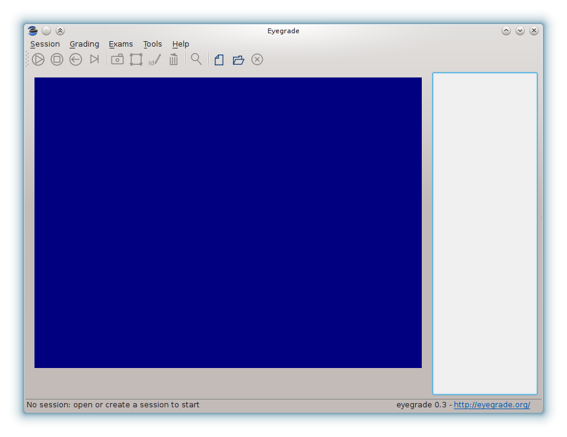Before beginning to grade exams, especially the first time you run Eyegrade, you can check that Eyegrade can access your webcam. In the Tools menu select the Select camera entry:
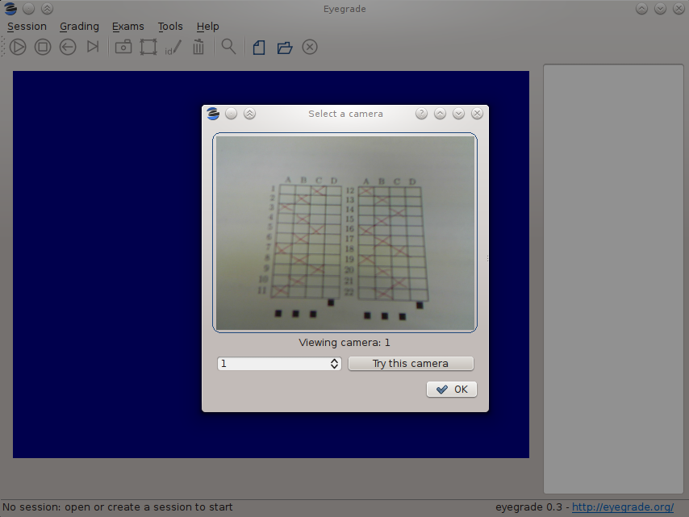The next step is creating a grading session. Select New session in the menu Session. A wizard will ask for some data Eyegrade needs for creating the session:
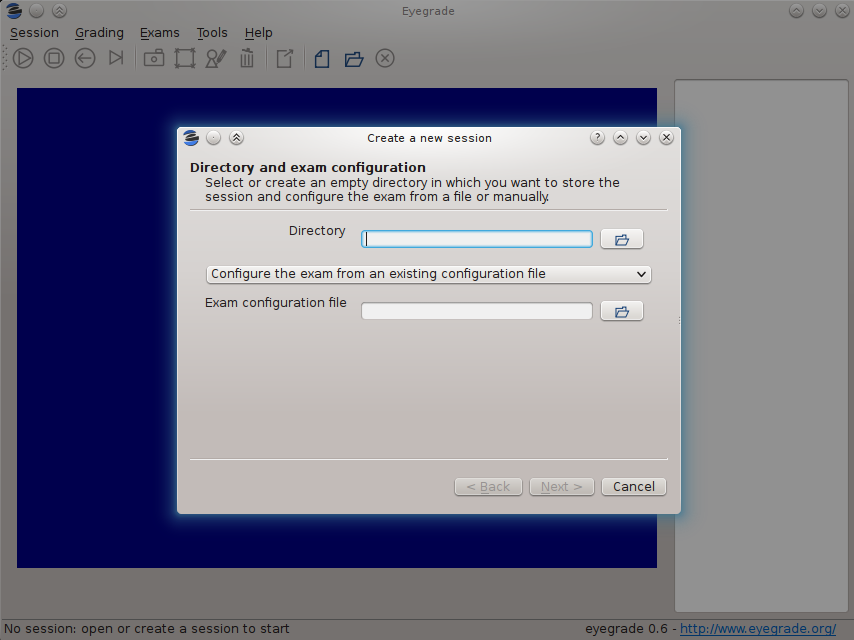In the first step of the wizard, you must select or create the directory where Eyegrade will store the data (grades, captures of exams) for this grading session. If you select an existing directory, it must be empty. In addition, you'll choose between loading an existing exam configuration file or configuration the exam manually. The configuration of the exam consists of data such as the number of questions, the correct answers, the geometry of the answer tables, etc. If you use Eyegrade for editing the exam, as explained in Editing exams, the exam configuration file will be automatically created along with the PDF files of your exams. If you are testing the sample exam distributed with Eyegrade, you should load here the exam.eye file from the same directory.
If you edit the exam with other software such as Microsoft Word (see Creating the exams in a word processor), select the option Configure the exam manually and proceed as explained in Manual configuration of the exam.
After you have entered the exam configuration (either from a file or manually) the last two steps of the wizard will allow you to create student groups and load student lists, as well as to enter the scores awarded to questions:
After you finish with this dialog, Eyegrade opens the session. It shows the image from the webcam and starts scanning for the exam. Point the camera to the exam until the image is locked. At this point, Eyegrade should show the answers it has detected. Read the following sections for further instructions.
If you choose to edit your exams with a word processor instead of using the LaTeX-based system that Eyegrade provides, you'll need to enter the exam configuration manually. You can enter it when you create a new session. In the first page of the session creation wizard, choose the option Configure the exam manually:
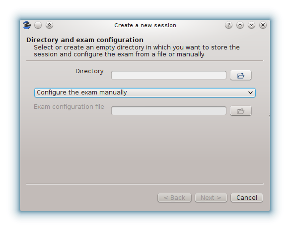Then, create or select an empty directory for the session and proceed to the next page:
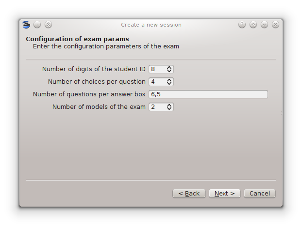In this page, you must enter:
The number of digits of the student id number. Set it to 0 if your exams do not ask for an student id.
The number of choices per question. That is, the number of alternative answers from which the student must select one.
The number of questions per answer box. The answer sheet may contain more than one answer table, such as the examples shown at Creating the exams in a word processor. Enter here the number of questions per answer table, from left to right. For example, you would enter "6,5" for the following answer table:
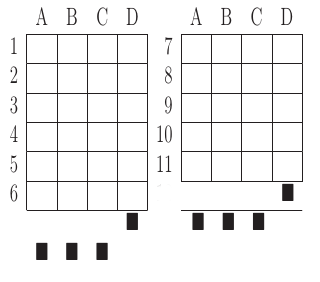The number of models of the exam. If you have different permutations of your questions in order to make it more difficult for students to look at the answers of other students, enter here how many variations of the exam you have. Each variation is called a model in Eyegrade. Models are labeled "A", "B", "C", etc.
Then, proceed to the next page and enter the correct answer for every question in every model of the exam:
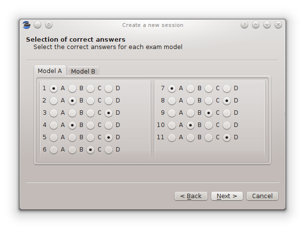You must enter the correct answer for every question in every exam model. When you finish entering the data of this page, the wizard will proceed to ask about the student list and question scores as explained in the previous section.
If you or your collegues need to create other sessions with the same configuration as one you've already entered, use the option Tools / Export exam configuration to export a file with the exam configuration of the current session. With this file you can create new sessions with exactly the same configuration.
The accuracy in the detection of the student identity improves dramatically when you supply the list of ids of the students in your class, where each student id is expected to be a sequence of digits.
Many institutions divide the students of the same course in separate groups or classes. Eyegrade is able to manage students in separate groups, which will allow you to export a separate grades listing for each one.
You can manage student groups and import the lists of students either in the New session wizard or later in the Exams / Students menu option. Both methods provide the same user interface. At the beginning, a default group with no student will be shown:
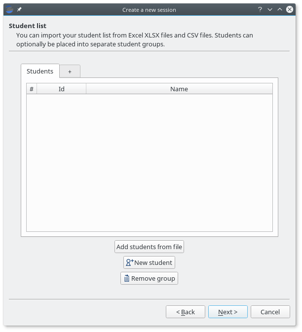If you don't need to separate your students into groups, just load the file or files that contain your student lists. Student lists can be provided in Office Open XML format (.XLSX files created from Microsoft Excel, LibreOffice and other compatible spreadsheet software) or in CSV (comma-separated values) format. In both cases, Eyegrade will scan the first columns and try to detect which ones store student ids (mandatory) and, optionally, student names and email. Your files may include a header line at the beginning and empty lines. They will be ignored when detected.
Some examples of valid student lists are shown below:
Student ids: just one column with the id number of the student:
100000333 100777777 100999997
Student id and full name: one column contains the student id number and the other one their full name:
100000333 Frodo Baggins 100777777 Bugs Bunny 100999997 Bastian Bux
Column order doesn't matter:
Frodo Baggins 100000333 Bugs Bunny 100777777 Bastian Bux 100999997
Separate first and last names: you can enter first and last names in separate columns, as long as they are contiguous. The first of them is treated as the first name by default:
100000333 Frodo Baggins 100777777 Bugs Bunny 100999997 Bastian Bux
If your file provides them in the opposite order, you'll be able to swap them once the file is loaded:
100000333 Baggins Frodo 100777777 Bunny Bugs 100999997 Bux Bastian
In any of the previous combinations of columns you may also insert a column with emails, in any position except between first and last names:
100000333 Frodo Baggins frodo@shire.com 100777777 Bugs Bunny bugs@cartoon.com 100999997 Bastian Bux bux@fantastica.com
Student id numbers must be composed just by digits. Leading zeros are allowed. Student first and last names can contain international (non ASCII) characters. They should be properly read from XLSX files. In CSV files you should use UTF-8 encoding.
In order to load a file, press the Add students from file button and select the file. A preview dialog will appear, in which you can revise the student list and fine tune how student names are loaded:
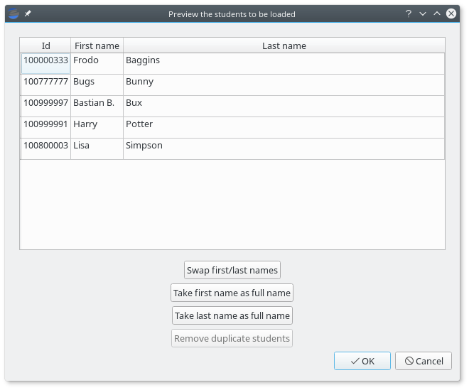From this dialog, you'll be able to swap the first and last name columns, just in case the were provided in the wrong order or treat one of these columns as the full name, in case Eyegrade wrongly detected separate columns.
Eyegrade won't allow you to load several students with the same student id. If that happens, the affected students will be highlighted and you'll be able to remove them from here.
You can accept or cancel the preview dialog. If you accept it, the students will appear now in your student list:
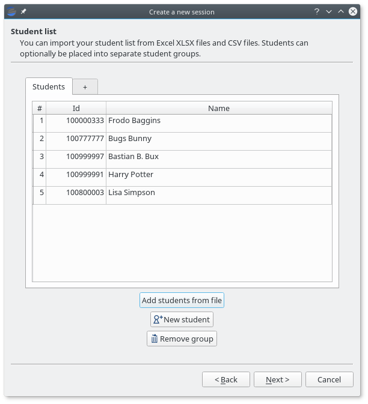You can also create a new group by clicking on the right-most tab header, rename a group by doubly-clicking on a tab header and remove the active group by pressing the Remove group button. Groups in which at least one student has an already graded exam cannot be removed:
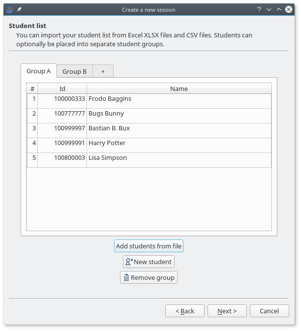A grading session in Eyegrade represents the grading of a specific exam for a group of students. For example, you would grade the exams for the final exam of all your students in the subject Computer Networks in just one session. Other exams, such as the re-sit exam of the same subject, should go in separate sessions.
Grading sessions are associated to a directory in your computer. You select or create this directory when you create a new session. Eyegrade stores there all the data belonging to the grading session (configuration file, student lists, grades, images of the already graded exams, etc.)
You can open again later an existing session with the Open session option of the Session menu. In the file selection dialog that appears, select the session.eyedb file inside the directory of the session you want to open. When you open the session, you can continue grading new exams that belong to that session.
Eyegrade can compute the scores of the exams. When you create a new session, you can select in the last page of the wizard one of the following three options:
When you select this option, all the questions count the same in the score of the exam. Eyegrade counts the number of correct, incorrect and blank answers, and multiplies each one by the score assigned to each of those types of answers.
For example, suppose an exam with 10 questions, in which correct answers add 1 point to the score and incorrect answers subtract 1/3 points (one third of a point). A student having 7 correct and 3 incorrect answers will get 6 points (7 * 1 - 3 * 1/3).
You specify those scores in the last step of the session creation wizard:
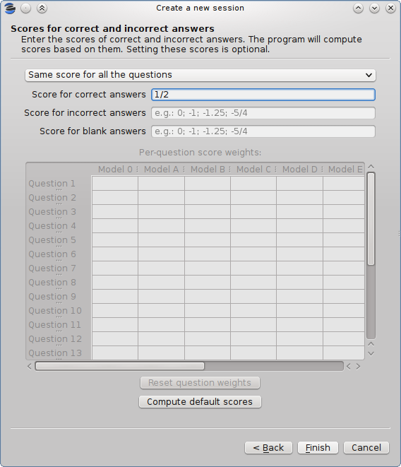Giving a positive score for correct answers is mandatory in this mode. The score for incorrect and blank answers is optional, and defaults to 0 when you don't enter it.
Eyegrade can automatically compute the appropriate scores for you if you specify the total score that a perfect exam would achieve. In order to do that, press the Compute default scores button, and the following dialog appears:
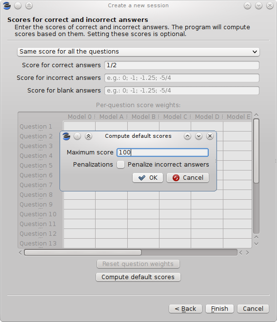The dialog computes the score for correct answers as the total score for a perfect exam divided by the number of questions. If you select the Penalize incorrect answers option, a score for incorrect answers is also computed as the score for correct answers divided by the number of choices of each question minus one. This way, the expected score for an exam with random answers (all the questions have the same probability of being marked by the student) is zero.
When you select this option for computing scores, not all the questions are awarded the same score. Important questions may get bigger scores than less important ones. In order to do that, you define a base score (e.g. 2 points for correct answers and -2/3 for incorrect ones) and a relative weight for each question. The weight of a question is a factor that multiplies the base score in order to get the actual score of that question. For example, for a question that you want to score double than the base score (4 points for correct answers and -4/3 for incorrect ones) you would set a weight of 2. For a question you want to have exactly the base score, you would set a weight of 1. You can even decrease the score of a question with respect to he base score. A weight of 1/2 would mean 1 point for correct answers and -1/3 for incorrect ones in our example.
You need to edit the scores in the table at the center of the dialog:
You can enter in each cell integer numbers (e.g. "2"), fractions (e.g. "1/2") or decimal numbers with fractional digits (e.g. "2.5"). If you have several exam models (alternative orderings of the questions), eyegrade will check that you enter the same weights in all the models, possibly in a different order for each model:
In addition, if your session configuration file contains the permutations done to each model (if you create the documents of your exams with Eyegrade, it will), Eyegrade automatically updates the value in all the models every time you change the weight of a question in one of them. However, if the file does not contain the permutations, you'll need to enter the weights for all the models yourself.
The Compute default scores button works also as expected in this mode. It takes into account the question weights you entered in order to compute the base scores. You should edit the question weights before computing the default base scores.
Assigning weight 0 to a question voids it:
The example above voids question 5 in model A, which is also question 1 in model B, question 2 in model C and question 3 in model D. Void questions will be clearly displayed in the capture of the exam, and won't be considered either for the score or the count of correct and incorrect questions:
At a given instant, the application is in one of these modes:
The application starts with no open session. Once you open or create a session, it changes to the session home mode. From it, you can start or continue grading (enter the grading mode with the Start grading command) or review already graded exams (enter the review mode by clicking on an exam at the right side of the main window).
When you are in the grading mode, the program is continually analyzing the image of the webcam. When it detects an answer sheet that it can read, it locks the capture and enters the review mode. Once you confirm that capture (command Continue to the next exam), Eyegrade automatically goes back to the search mode in order to scan the next exam.
You can enter the manual detection mode by issuing the appropriate command while in the other modes.
From the grading mode you can go back to the session home mode with the Stop grading command. From any of the other modes, you can go back to the no session mode with the Close session command in the Session menu.
In the grading mode, you have to get the camera to point to the answer table of the exam, including, if present, the id box above it and the small squares at the bottom.
Eyegrade will continually scan the input of the webcam until the whole exam is correctly detected. At that moment, Eyegrade will switch to the review mode.
Sometimes, Eyegrade is able to detect the answer table but not the ID table at the top of it. You can notice that because the detected answers are temporary shown on top of the image. At this point, you may try further until the ID box is also detected, or just use the Capture the current image command of the Grading menu, which will force the system to switch to the review mode, using the most recent capture in which the answer table was detected. You will be able to manually enter the missing student id in that mode.
In rare occasions, Eyegrade could fail event to detect the answer table. The Manual detection command of the Grading menu allows you to help the system detect it.
These are the commands available in the grading mode, all of them at the Grading menu:
In the review mode you can review and, if necessary, fix the information detected by Eyegrade in the current exam. You can do it on both the answers given by the student to each question and the student id. You enter the review mode in one of the following three different situations:
The user interface shows, in this mode, a capture of the exam augmented with the detected information, as shown in the following image:
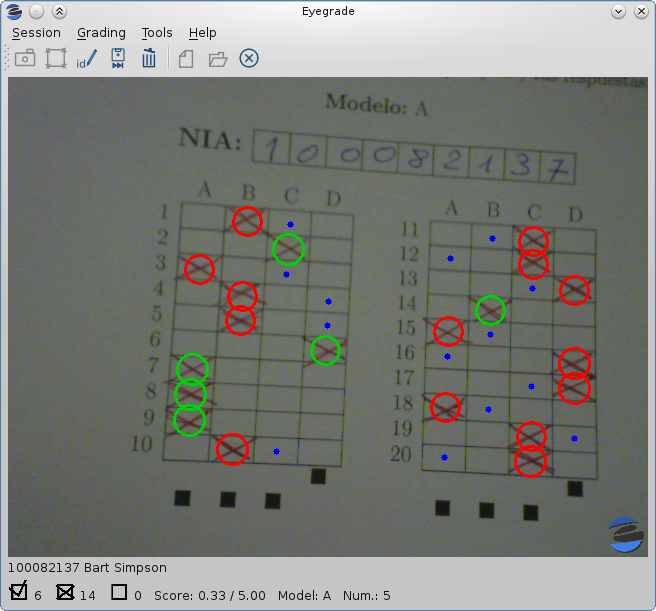As you can see, the system shows:
In this mode, you can perform the following actions (see the Grading menu):
The optical recognition system of Eyegrade may fail sometimes, due to its own limitations, or students filling their exams in messy ways. Sometimes, Eyegrade shows a cell in the answer table as marked when it is not, or a cell is not marked when it actually is. In addition, if Eyegrade thinks that two cells of the same question are marked, it will leave that question as blank.
You are able to fix those mistakes at the review mode. Click on a cell of the answer table to change an answer of the student that was not correctly detected by Eyegrade: when the student marked a given cell, but the system detected the question as blank, or simply showed other answer of that question as marked, just click on the cell the student actually marked. When the student left a question blank but the system did mark one of the cells as the answer, click on that cell to clear it. In both cases, Eyegrade will compute the scores again and immediately update the information on the screen.
Normally, you should provide Eyegrade with the list of class, because detection of student ids performs much better in that case. When scanning the id in an exam, Eyegrade sorts ids of the students in class according to the estimated probability of being the id in the exam. The one with the most probability is shown.
In the review mode, you can enter the correct student id when Eyegrade does not detect it, or detects a wrong one. When you select the Edit student id command in the Grading menu, a dialog for selecting the student id is shown:
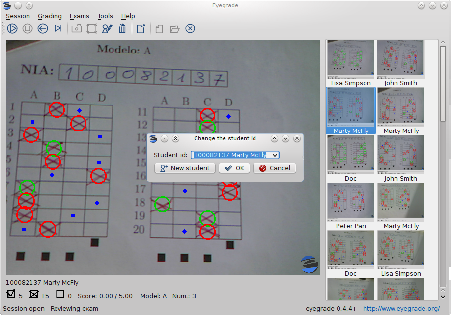The dialog shows a drop-down menu with the students from the student list sorted by their probability (according to the OCR module) of being the student whose id is in the exam. You just choose any student in the list. In addition, you can filter students by writing part of their id number or their name.
If the student is not in your list, you can also push the New student button to create a new student. It opens a dialog in which you can enter the data. The only mandatory field is this dialog is the student id number:
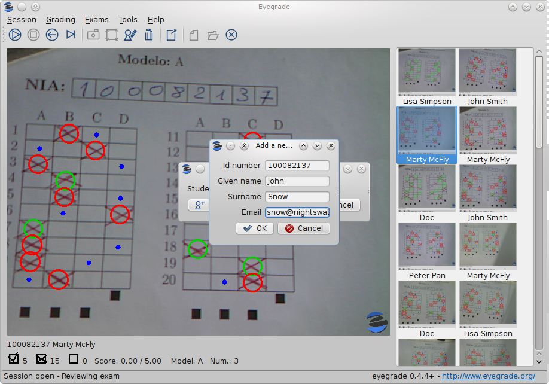In some rare occasions, Eyegrade may not be able to detect the answer tables. In those cases, you can enter the manual detection mode from the grading mode (and also from the review mode if you entered that mode using the Capture the current image command). When entering the manual detection mode, the latest capture of the camera will be shown.
In this mode, just click with the cursor in the four corners of each answer table (a small circle will appear in every location you click). The order in which you click on the corners does not matter. After having done that, Eyegrade will infer the limits of each cell, and based on them it will read the answers of the student and the exam model. It will enter then the review mode.
The following two images show an example. In the first image, the user has selected six corners (notice the small blue circles):
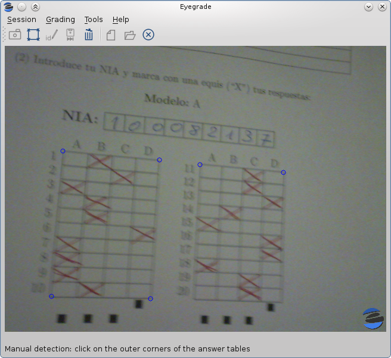After she selects the remaining two corners, the system detects the answers and goes back to the review mode:
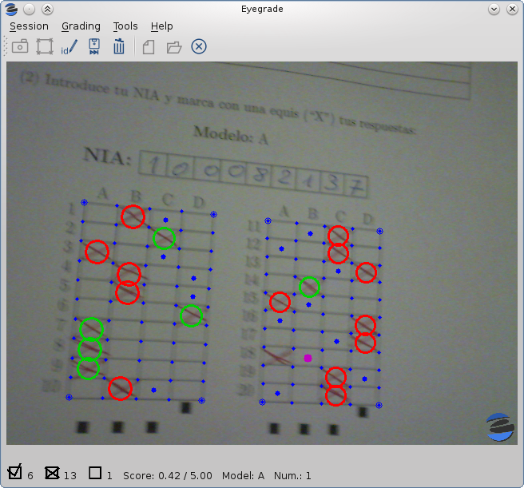Note, however, that the student id will not be detected when you use this mode. When the system goes back to the review mode, set the id as explained in Modifying the student id.
At any point of the process, you can use the Manual detection of answer tables command (shortcut 'm') to reset the selection of corners and start again. If you think that the captured image is not good enough, you can also use the discard command (shortcut 'Backspace') to go again to the grading mode.
Tip: in the manual detection mode, make sure that the captured image shows all the answer tables as well as the exam model squares at the bottom.
The easiest way to get the scores of your students once you've graded the exam is Exporting a listing of scores. You'll get a spreadsheet that you can open with Microsoft Excel, Libreoffice and other compatible spreadsheet software.
In addition, Eyegrade will produce some files within the session directory, including a snapshot of each graded exam. See Output within the session directory for more information.
You will probably want to export your listing of scores in order to import it into the grade-book, spreadsheet, etc. you use. This can be done from the user interface (menu Exams / Export grades listing).
First, the program shows a dialog like the following one:
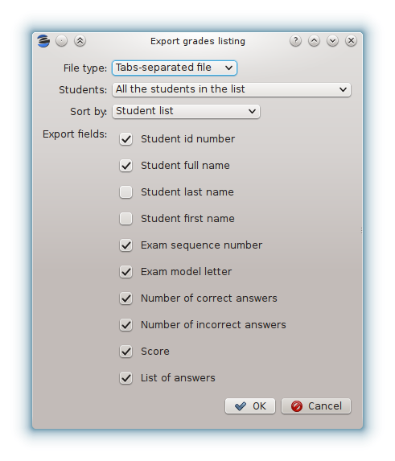In this dialog you have to select:
Once you complete the selection of options and press the OK button, a new dialog allows you to select the location and name with which the file will be saved. The proper filename extension (.xslx or .csv) is automatically set if you type a name without extension.
The output produced by Eyegrade within the session directory consists mainly of the following files:
The file eyegrade-answers.csv produced by Eyegrade contains the scores in CSV format (with tabulator instead of comma as a separator), so that it can be easily imported from other programs such as spreadsheets. This is an example of such a file:
0 100999991 D 9 6 4.5 1/2/2/4/1/2/2/0/0/3/2/0/3/2/0/4/3/0/1/2 1 100999997 C 15 1 15.0 2/4/4/3/1/0/1/2/1/1/0/1/0/4/3/0/1/4/3/4 2 100800003 D 6 14 6.0 4/2/2/2/1/2/1/3/2/1/3/1/2/1/3/1/4/1/4/3 3 100777777 A 7 13 7.0 3/2/3/2/3/3/2/4/3/1/3/1/4/1/4/2/2/3/4/2
The columns of this file represent:
1.- The exam sequence number (the same number the user interface shows below the student id in the review mode).
2.- The student id (or '-1' if the student id is unknown).
3.- The exam model ('A', 'B', 'C', etc.)
4.- The number of correct answers.
5.- The number of incorrect answers.
6.- The score of the exam, if you configured the weight of correct and incorrect answers for this session.
7.- The response of the student to each question in the exam, from the first question in her model to the last. '0' means a blank answer. '1', '2', etc. mean the first choice, second choice, etc., in the order they were presented in her exam model.
Exams are in the same sequence they were graded. See Exporting a listing of scores to know how to produce a listing of scores with the columns and student order that best fits your needs.
Although you can use any software of your preference to typeset the exams, Eyegrade provides a module for doing that in combination with the LaTeX document preparation system.
The procedure consists of four steps, which are described in the next sections:
The example files used in the following explanations are provided with Eyegrade inside its doc/sample-files directory (also accessible at GitHub).
This guide assumes that you have a LaTeX system installed. If you don't have it in your system, follow the instructions in Installing the LaTeX system.
You need to typeset your questions in an XML document. You may use your favorite text editor for that.
At the beginning of the file you should provide some basic data about the exam, such as: the name of the course/subject, the name of the degree, the name of the exam, the date and the duration of the exam. You don't need to provide all those values, just the ones you want printed in the exam.
In addition, you can optionally configure there the scores to be awarded/detracted for correct/incorrect answers and configuration for student id detection. Got to Configuring student id detection and Configuring scores for more details about these two options.
Then, write the questions one by one. For each question, you have to provide:
The XML markup must be like shown in the following example:
<?xml version="1.0" encoding="UTF-8"?>
<exam xmlns="http://www.it.uc3m.es/jaf/eyegrade/ns/"
xmlns:eye="http://www.it.uc3m.es/jaf/eyegrade/ns/">
<subject>Computers and More</subject>
<degree>An Awesome Degree</degree>
<title>Final examination</title>
<date>January 1st, 2011</date>
<duration>10 min.</duration>
<studentId eye:label="ID" eye:length="8" />
<scores eye:maxScore="100" eye:penalize="false" />
<question>
<text>
What is Python?
</text>
<choices>
<correct>A programming language</correct>
<incorrect>A computer manufacturer</incorrect>
<incorrect>A kind of tree</incorrect>
<incorrect>Who knows!</incorrect>
</choices>
</question>
<question>
<text>
What is a webcam?
</text>
<choices>
<correct>A video camera whose output may be viewed in real
time over a network, especially over the Internet.</correct>
<incorrect>A video camera intended to spy on spiders</incorrect>
<incorrect>A kind of fish</incorrect>
<incorrect>Who knows!</incorrect>
</choices>
</question>
<question>
<text>
What is the thing at the right?
</text>
<code eye:position="right" eye:width="0.4">for letter in ['a', 'b', 'c']:
print letter</code>
<choices>
<correct>A computer program</correct>
<incorrect>A recipe</incorrect>
<incorrect>A tree</incorrect>
<incorrect>Who knows!</incorrect>
</choices>
</question>
<question>
<text>
Is the thing in the right a logo?
</text>
<figure eye:width="0.16" eye:position="right">sample-logo.pdf</figure>
<choices>
<correct>Well, it tries to be a logo, to be honest.</correct>
<incorrect>No, it's a tree.</incorrect>
<incorrect>No, it's a perfect square.</incorrect>
<incorrect>Who knows!</incorrect>
</choices>
</question>
<question>
<text>
Which is the capital of Spain?
</text>
<choices>
<correct>Madrid.</correct>
<incorrect>Barcelona.</incorrect>
<incorrect>Paris.</incorrect>
<incorrect>None of the other answers is correct.</incorrect>
</choices>
</question>
<question>
<text>
Which is the capital of France?
</text>
<choices>
<correct>Paris.</correct>
<incorrect>Lion.</incorrect>
<incorrect>Madrid.</incorrect>
<incorrect>None of the other answers is correct.</incorrect>
</choices>
</question>
<question>
<text>
What does ``hola'' mean in Spanish?
</text>
<choices>
<correct>``Hello''.</correct>
<incorrect>``Bye''.</incorrect>
<incorrect>``Wave''.</incorrect>
<incorrect>``Hola'' is not a word in Spanish.</incorrect>
</choices>
</question>
<question>
<text>
How many months has a year?
</text>
<choices>
<correct>12.</correct>
<incorrect>6.</incorrect>
<incorrect>10.</incorrect>
<incorrect>It depends on whether it is a leap year or not.</incorrect>
</choices>
</question>
<question>
<text>
Are dolphins mammals?
</text>
<choices>
<correct>Yes.</correct>
<incorrect>No.</incorrect>
<incorrect>Sometimes.</incorrect>
<incorrect>Who knows\ldots.</incorrect>
</choices>
</question>
<question>
<text>
Who created Python?
</text>
<choices>
<correct>Guido van Rossum.</correct>
<incorrect>Richard Stallman.</incorrect>
<incorrect>Dennis M. Ritchie.</incorrect>
<incorrect>Jamie Zawinski.</incorrect>
</choices>
</question>
<question>
<text>
How is ``Germany'' said in German?
</text>
<choices>
<correct>Deutschland.</correct>
<incorrect>Die Schweiz.</incorrect>
<incorrect>Germany.</incorrect>
<incorrect>Berlin.</incorrect>
</choices>
</question>
<question>
<text>
What is Linux?
</text>
<choices>
<correct>A free-software operating system.</correct>
<incorrect>A river in Spain.</incorrect>
<incorrect>The tallest mountain on Earth.</incorrect>
<incorrect>An Internet company that sells phones.</incorrect>
</choices>
</question>
<question>
<text>
Which of the following pieces of code follows the Java syntax?
</text>
<choices>
<correct>
<code>public class MyClass {
}
</code>
</correct>
<incorrect>
<code>class MyClass:
pass
</code>
</incorrect>
<incorrect>
<code>PUSHA
MOV eax, 60
</code>
</incorrect>
<incorrect>
<code>struct MyClass {
}
</code>
</incorrect>
</choices>
</question>
<question>
<text>
Which of the following pictures is different to the rest?
</text>
<choices>
<correct>
<figure eye:width="0.03">drawing-1.pdf</figure>
</correct>
<incorrect>
<figure eye:width="0.03">drawing-2.pdf</figure>
</incorrect>
<incorrect>
<figure eye:width="0.03">drawing-2.pdf</figure>
</incorrect>
<incorrect>
<figure eye:width="0.03">drawing-2.pdf</figure>
</incorrect>
</choices>
</question>
</exam>
You can insert LaTeX markup within the text of the statement and the choices if you need, for example, to insert a math equation or format a piece of text in italics, boldface or typewriter font:
<question>
<text>
Text in \emph{italics}, \textbf{boldface}
and \texttt{typewriter} font style.
</text>
<choices>
<correct>A LaTeX equation: $x^2 - 1$</correct>
<incorrect>Nothing</incorrect>
</choices>
</question>
For inserting a picture in the statement of the question, you use the <figure> tag. Its file name must be provided within the <figure> and </figure> tags. It takes the following configuration attributes:
This is an example:
<question>
<text>
Is the thing in the right a logo?
</text>
<figure eye:width="0.16" eye:position="right">sample-logo.eps</figure>
<choices>
<correct>Well, it tries to be a logo, to be honest.</correct>
<incorrect>No, it's a tree.</incorrect>
<incorrect>No, it's a perfect square.</incorrect>
<incorrect>Who knows!</incorrect>
</choices>
</question>
Pictures can also be used inside a choice. It that case, the choice can only contain the picture and the eye:position attribute must not be used:
<correct> <figure eye:width="0.2">sample-logo.eps</figure> </correct>
For inserting a block of code in the statement of the question, you use the <code> tag. The code itself is given within the <code> and </code> tags. White space and end-of-line characters are displayed as you provide them. It takes the following configuration attributes:
This is an example:
<code eye:position="right" eye:width="0.4">for letter in ['a', 'b', 'c']:
print letter</code>
Blocks of code can also be used inside a choice. It that case, the choice can only contain the block of code and neither attribute can be used:
<incorrect>
<code>class MyClass:
pass
</code>
</incorrect>
If you want Eyegrade to detect student ids, you can provide a studentId element as shown in the example at Editing the questions of the exam. You just need to specify the length (number of digits) of student ids and the label that will be printed on the exam at the left of the box where students will write down their ids:
<studentId eye:label="ID" eye:length="8" />
If you provide a valid student id length, a student id box will automatically be inserted above the answer tables. Don't include the studentId element in your questions file if you don't want Eyegrade to detect student ids. The student id box won't appear in the exam in that case.
You can optionally provide within the questions file the score to be awarded for correct answers and the score to be detracted for wrong answers by using the scores element, as shown in the example at Editing the questions of the exam. If you provide your scores here, they will automatically be saved into the exam configuration file. If you prefer not to, you'll still be able to enter scores later, when you create the grading session (see section Scores).
You have two ways to provide scores within the questions file. The first way consists in directly specifying those scores. For example, in order to awarding one point to correct answers:
<scores eye:correct="1" />
Scores can also be provided as fractional or decimal numbers:
<scores eye:correct="3/2" /> <scores eye:correct="1.5" />
By default, wrong answers don't detract points, but you can change this behavior. The following example penalizes wrong answers with half the score of a correct answer:
<scores eye:correct="1" eye:incorrect="1/2" />
For example, a student that got 8 correct answers and 2 incorrect answers would get 7 points (8 - 2 * 1/2).
You can alternatively let Eyegrade compute scores by specifying the maximum grade a student can get:
<scores eye:maxScore="100" />
In the example above, if there were 10 questions in your exam, Eyegrade would automatically assign 10 points to correct answers.
Wrong answers don't get a penalization in the example above. If you want a penalization so that the expected value for random answers is a score of 0, you can specify:
<scores eye:maxScore="100" eye:penalize="true" />
In the example above, in an exam with 10 questions with 3 choices each, wrong answers would get a penalization of 5 points. A student that answers randomly would be an average of 10/3 correct answers and 20/3 incorrect answers, for a final score of 10 * 10 / 3 - 5 * 20 / 3 = 0.
In addition to the questions of the exam, you'll need a LaTeX template. It allows you to design the front page of the exam and other aspects (fonts, margins, etc.) This is an example:
\documentclass[a4paper,11pt]{article}
\usepackage{amssymb, amsmath}
\usepackage[utf8]{inputenc}
\usepackage{indentfirst}
\usepackage{multirow}
\usepackage[a4paper, margin=2.5cm, top=2cm, bottom=3cm]{geometry}
\pagestyle{empty}
{{declarations}}
\begin{document}
\begin{center}
\begin{tabular}{p{5.2cm}r}
\multirow{5}{*}[0.35cm]{\scalebox{0.18}{\includegraphics{sample-logo.pdf}}} &
\Large \textbf{{{subject}}} \\
& \textbf{{{degree}}} \\
& \\
{{date}} & {{title}}. \\
Duration: {{duration}}
& Score: 5 points out of 10 total points for the exam. \\
\end{tabular}
\end{center}
\vspace{0.5cm}
\emph{There is only one correct answer for each multiple choice
question. Score por correct answers: {{score_correct}}.
Penalty for wrong answers: {{score_incorrect}} points.}
\vspace{0.5cm}
\begin{center}
\begin{tabular}{|p{0.8\textwidth}|}
\hline
\begin{itemize}
\item Mark out your answers with an ``X''.
\item If more than one answer or no answer are selected, the question
is considered to be not answered (no score is awarded, neither
positive nor negative).
\item Remember to fill in your name and student ID.
\end{itemize}
\\
\hline
\end{tabular}
\end{center}
\vspace{0.2cm}
\begin{center}
(1) Write your personal data clearly.
\end{center}
\begin{center}
\large
\begin{tabular}{|l|p{12cm}|}
\hline
Last name: & \\
\hline
First name: & \\
\hline
Group: & \\
\hline
\end{tabular}
\end{center}
\vspace{0.2cm}
\begin{center}
(2) Write down your student ID and cross out your answers with an ``X'':
\end{center}
\begin{center}
\large
\textbf{Model:} {{model}}
\end{center}
{{answer-table}}
\clearpage
{{questions}}
\end{document}
In the template, notice that there are some marks within {{ and }} that are intended to be replaced by the script with data from the exam:
Note that a template is highly reusable for different exams and subjects.
Once the exam file and the template have been created, the eyegrade-create program parses them and generates the exam in PDF format, provided that LaTeX is installed and available in your system's PATH (see Installing the LaTeX system).
You'll use the eyegrade-create.exe (just eyegrade-create on Linux) binary file. The only way to run eyegrade-create by now is from a command-prompt console. If you are on Windows, you'll need to provide its full location in the console:
"C:\Program File (x86)\eyegrade\app\eyegrade-create" --version
Don't forget to add the double quotation marks because of the white spaces within its path. Alternatively, you may add the C:\Program Files (x86)\eyegrade\app to your system's PATH (see, for example, this guide about changing the PATH variable in Windows 10). If you do that, you won't need to enter the full path of the program:
eyegrade-create --version
On Linux, just run eyegrade-create from a console, because with the two suggested installation methods the program will be in your shell's PATH variable:
eyegrade-create --version
Once you are able to run eyegrade-create, let's see how to create the PDF files of your exams. Run the following command from a command-line console (remember to change it to the full path if you are in Windows and it isn't in your PATH):
eyegrade-create -e exam-questions.xml -m 0AB template.tex -o exam
It will create models 0, A and B of the exam with names exam-0.pdf, exam-A.pdf and exam-B.pdf. The exam model 0 is a special exam in which questions are not reordered. The correct answer is always the first choice in the model 0. The model 0 is convenient while editing the questions, but you must remember not to use it in the exam itself.
In addition, Eyegrade will automatically create the exam.eye file needed to grade the exams, or update it if it already exists.
If Eyegrade encounters an error in the process, you'll see the reason of the error in one of the following two ways:
The script create_exam.py has other features, like creating just the front page of the exam (no questions needed). They can be explored with the command-line help of the program:
eyegrade-create -h
The answer table can be enlarged or reduced with respect to its default size, using the -S option and passing a scale factor (between 0.1 and 1.0 to reduce it, or greater than 1.0 to enlarge it). The following command enlarges the default size in a 50% (factor 1.5):
eyegrade-create -e exam-questions.xml -m A template.tex -o exam -S 1.5
LaTeX is included in the repositories of the major Linux distributions. In Debian and Ubuntu you can simply install the package texlive-latex-recommended:
sudo apt-get install texlive-latex-recommended
For MS Windows there are some LaTeX distributions that provide a graphical installer, such as ProText:
The current prototype of Eyegrade require users to know LaTex in order to personalize exam templates. This section explains an alternative way to create exams compatible with Eyegrade in a word processor such as Microsoft Word. If you create your own exams with a word processor, you'll need also to enter the exam configuration when you create a new grading session. See Manual configuration of the exam if you want to enter the values through the user interface of Eyegrade or Manually editing the .eye file if you prefer to use a text editor.
The objective is emulating the tables that Eyegrade creates so that the program can read them. This is an example:
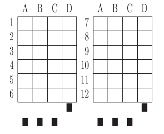You can use as a template this example MS Word document. It shows an answer table for 20 questions, which you can edit in order to customize if for your needs. Nevertheless, you should read the rest of this section if you are planning to customize the answer table.
An answer table is a table in which rows represent the questions and columns represent the choices. There can be more than one answer table, but they have to be side by side (they cannot be placed one above the other). The example above show two answer tables. A few restrictions have to be taken into account:
The boxes for the student ID number should be above the answer tables, not too close but not too far away either (see the example below). The width of the student ID table should be comparable to the sum of the width of the answer tables (approximately no less than 2/3 of that sum, and no more than 3/2). Student IDs with just a few digits (two, three, four) can potentially be problematic for wide answer tables.
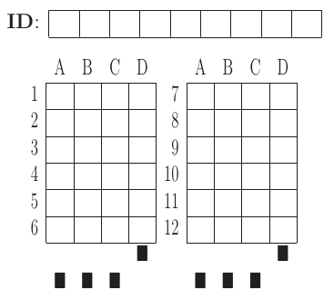At the bottom of the answer boxes there must be some black squares. They encode the exam model (permutation). In addition, they help the system to know whether the detection of the answer tables was correct.
Imagine that there are two more rows at the end of each answer table, with the same height as the other rows. Squares will be either in the one above or in the one below, and there must be a square per column. Squares should be centered in those imaginary cells. The position (above/below) of a square conveys the information read by Eyegrade as binary information.
The exam model is encoded with three squares. Therefore, there can be eight different models. The fourth square is a redundancy code for the previous three squares. This 4-square pattern is repeated from left to right as long as there are columns. The table to which a column belongs is not taken into account. For example, if there are two answer tables with three columns each, the fourth square (the redundancy square) is placed at the first column of the second table. The other two columns of the second answer table would contain the same squares as the first two columns of the first table.
The following table show the 4-square pattern for each exam model, as they should be placed from left to right:
| Model | ||||
| A | Down | Down | Down | Up |
| B | Up | Down | Down | Down |
| C | Down | Up | Down | Down |
| D | Up | Up | Down | Up |
| E | Down | Down | Up | Down |
| F | Up | Down | Up | Up |
| G | Down | Up | Up | Up |
| H | Up | Up | Up | Down |
The files that store the configuration of an exam and the correct answer for each question are stored with a .eye extension. An example is shown below:
[exam]
dimensions: 4,7;4,7
id-num-digits: 8
correct-weight: 50/7
incorrect-weight: 0
blank-weight: 0
[solutions]
model-A: 3/3/3/2/4/4/3/4/1/2/2/2/1/3
[permutations]
permutations-A: 8{3,2,1,4}/1{3,4,1,2}/7{3,2,1,4}/10{2,1,4,3}/2{2,3,4,1}/14{4,3,2,1}/5{4,2,1,3}/12{3,4,2,1}/13{1,4,2,3}/6{4,1,3,2}/11{3,1,2,4}/9{2,1,3,4}/4{1,4,2,3}/3{3,4,1,2}
The file is just plain text and can be edited with any text editor. It has several sections: exam, solutions and permutations.
The fields of the exam section are:
The fields correct-weight and incorrect-weight are optional. If they appear in the file, the program will show the total score in the user interface.
The solutions section specifies the correct answers for each model (permutation) of the exam. Models are identified by letters ("A", "B", etc.). For example:
model-A: 4/1/2/1/1/1/2/4/1/2/3/1 model-B: 3/2/1/4/4/2/2/1/4/2/3/3
In the example above, in the model A, the correct answer for the first question is the 4th choice, for the second question is the 1st choice, for the third question is the 2nd choice, etc.
The permutations section has information that allows to know how questions and choices have been shuffled with respect to the original order. They are used only for extracting statistics or fixing grades after the exam if the solutions used for grading are found to have an error in some questions. If you create the .eye manually, you probably want to just remove this section from the file, unless you need some of the above-mentioned functions.
If the camera in your setup is fixed, that is, you place an exam below the camera, review it, remove it and place the next exam, you may want Eyegrade to detect that you have removed the exam instead of having to click on the Save and capture next exam command.
You can activate this experimental feature in the Tools menu, Experimental submenu, option Continue on exam removal. When this option is checked, Eyegrade saves the current capture and enters the search mode automatically, after a few seconds of not detecting an exam. Before placing the new exam, wait for the system to actually enter the search mode: if you are too quick, Eyegrade might not detect the removal of the exam.
Tip: don't use this option if the camera is not fixed, because just moving it a little bit may cause Eyegrade to think that the exam has been removed.